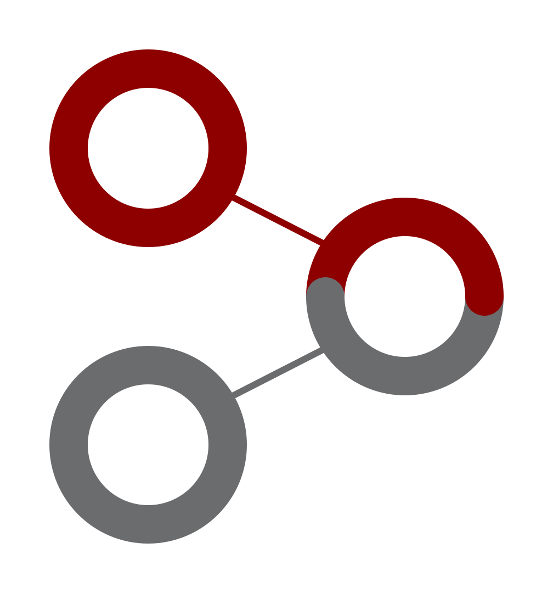

Apprentissage par exemples

Foppolo Gaël & Philip Bastien - 22 février 2016
Samuel Alain
Introduction
« Caractériser un concept à partir d'exemples de ce concept. »
Apprentissage supervisé via classification automatique :
- Analyse des données
- Détermination de traits caractéristiques communs
- Construction d'un ou plusieurs modèle(s) (description caractéristique)
Un ensemble d'exemples, chaque exemple est composé d'un ou plusieurs objets
Trois type d'attributs pour décrire les objets :
- numérique : intervalle d'entier
- discret : liste (ou énumération)
- hiérarchique : arbre
Ainsi que des relations qui décrivent les « connexions », binaires et unidirectionnelles, entre les objets d'un même exemple
Étape 1 - Un objet par exemple
Entrée :
Ensemble d'exemples avec un seul objet, chaque objet composé des mêmes attributs
Stratégie :
Combinaison des objets : unique
À chaque nouvel objet traité, on modifie la solution actuelle afin qu'elle inclue les caractéristiques de tous les objets déjà traités
Sortie :
Une solution unique, la combinaison
Attribut de type intervalle :
modification d'une des bornes de l'intervalle
Attribut de type liste :
ajout de la valeur dans la liste (sans doublons)
Attribut de type arbre :
calcul du plus petit ancêtre commun (LCA)
Étape 2 : plusieurs objets par exemple avec relations
Calcul du nombre de combinaisons possibles
= nb solutions + évoquer exponentiel sur nb d'exemples
Tableau pour stocker tout ça
\(n\) : nombre d'exemples-1
\(X_i\) : indice de l'objet dans l'exemple \(i\)
\(O_j\) : nombre d'objets dans l'exemple \(j\)
Application bijective continue (homéomorphisme) :
\[ \left( \sum\limits_{i = 0}^{n-1} \left( X_i \times \prod\limits_{j=i+1}^{n} O_j \right) \right) +X_n \]
Génération combi + ajout relations
relations : réflexivité et transitivité non gérées
exemple intéractif
Étape 3 : généralisation
Stratégie : inclusion à expliquer (+ règles)
énoncer complexité O(n^2)
exemple intéractif pour visualiser les suppressions
Étape 4 : contre-exemples
Stratégie : explication
exemple intéractif pour visualiser les suppressions
Notre application
Généricité : pourquoi, comment, les tenants et les aboutissants
Décision de généraliser le plus possible ce sur quoi peut fonctionner le programme -> parser + architecture -> perte de sémantique, on ne vérifie pas la cohérence logique des données d'entrées
attributs supportés
Modèles et exemples
Outils
GitHub
Service d'hébergement de dépôt Git
Documentation avec Doxygen
Conclusion
ça marche + liens
Applications généralisées
- Reconnaissance de caractères
- diagnostic médical (symptômes, mesures, etc.)
- etc.
Plus généralement : la reconnaissance de motifs (patern)